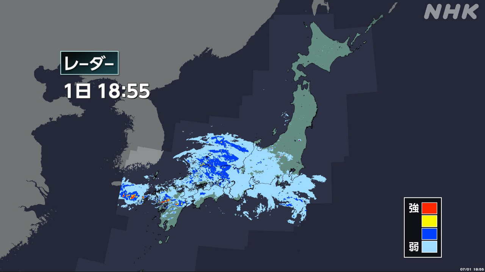
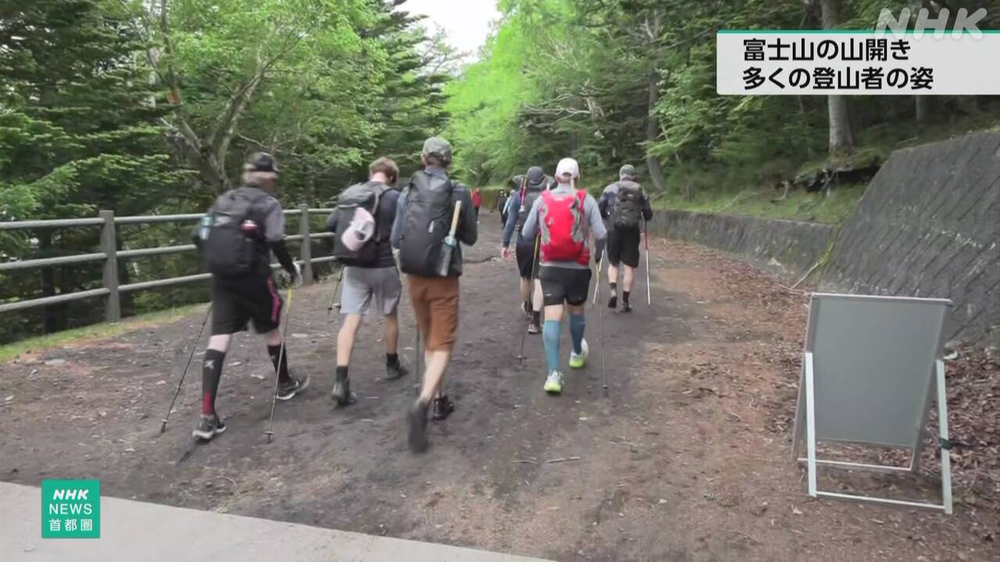
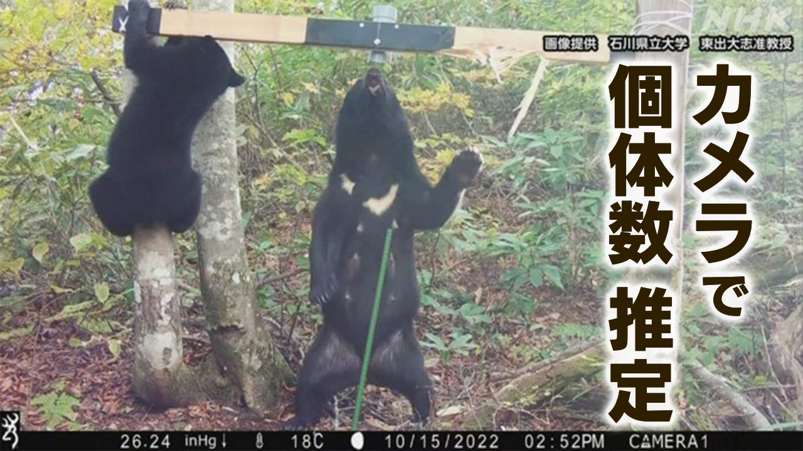

最新ニュース
1️⃣ 奄美地方で梅雨が終わった 西日本などで梅雨の雨が続く

鹿児島県の奄美地方は7月1日、晴れていい天気になりました。気象庁は、奄美地方で梅雨が終わったようだと言いました。
しかし、九州地方や中国地方、近畿地方など西日本で、1日も梅雨の雨が続いています。長崎県などで、とても強く降ったところがありました。
気象庁によると、西日本で1日と2日は雨がたくさん降りそうです。雨が降る場所は少しずつ東に移って、2日の午前中は関東地方でも強く降るかもしれません。
今までの雨で山が崩れやすくなっているところがあります。低い所に水が入ったり、川の水が増えたりするかもしれません。気象庁は災害に気をつけるように言っています。
2️⃣ 富士山 7月1日からいちばん上まで登ることができる

富士山は、7月1日からいちばん上まで登ることができます。
登ることができるのは、山梨県側と静岡県側の2つのルートです。
富士山には、夜休まないで、ずっと登る人がいます。
この登り方は危ないため、山梨県は午後2時から朝3時まで、5合目のゲートを閉めます。
登る人は山梨県側で1日に4000人までです。1人4000円を払います。
1日は外国からも多くの人が来て、いちばん上に向かって歩いていました。
80歳の男性は「きょうは天気がいいですが、気をつけて登りたい」と話していました。
3️⃣ 日本を出るときに払うお金 3000円に上がった
外国に行く人は、日本を出るときにお金を払います。そのお金が、7月1日から上がりました。
今までは1人1000円でしたが3000円になりました。日本人も外国人も払う必要があります。飛行機などのチケットを買うときに払います。
このお金は国に入ります。今までより1年で1200億円ぐらい多くなりそうです。
日本では、旅行に来る人が多すぎて、まちに住んでいる人が困るような問題が起こっています。
国は、集めたお金を問題をなくすためなどに使いたいと言っています。
4️⃣ 熊がどのくらいいるか 800のカメラで調べる

熊が人を襲う被害が増えています。
環境省は、東北地方の6つの県と新潟県で、熊がどのくらいいるか新しいやり方で調べます。
山の中などに、熊が好きなはちみつを置きます。そして、近くの木にカメラを付けて、熊を写します。胸の模様がみんな違うので、熊がどのくらいいるかがわかります。
今年は800のカメラを使って10月ごろまで調べます。
これから4年ぐらいで日本の全部の場所を調べる計画です。
環境省は「熊がどのくらいいるかを正しく調べて、どうしていくか考えたい」と話しています。
- 〜ていい
- 〜になる
- 〜ようだ / 〜みたいだ
- 〜など
- 〜ている / 〜でいる
- 〜がある / 〜がいる
- 〜ても / 〜でも
- 〜ところ
- 〜によると
- 〜そうだ
- 〜かもしれない / 〜かもしれません
- 〜ず / 〜ずに
- 〜中
- 〜やすい
- 〜まで
- 〜たり〜たりする
- 〜ように
- 〜ことができる
- 〜から
- 〜から〜まで
- 〜こと
- 〜ないで
- 〜ため
- 〜方
- 〜くらい / 〜ぐらい
- 〜より
- 〜ような
- 〜すぎる
- 〜ので
- 〜ごろ
vebaev.github.io
Generated: 2026-07-01 12:34:18 UTC